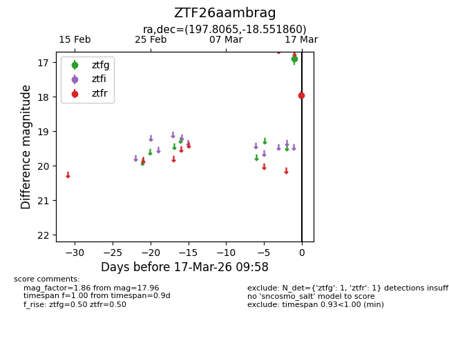
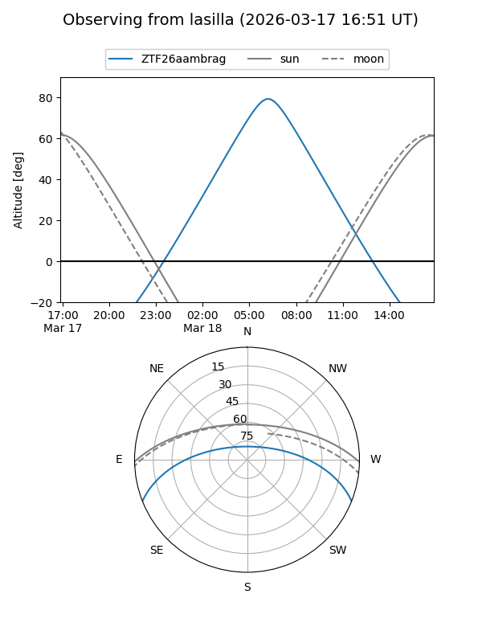
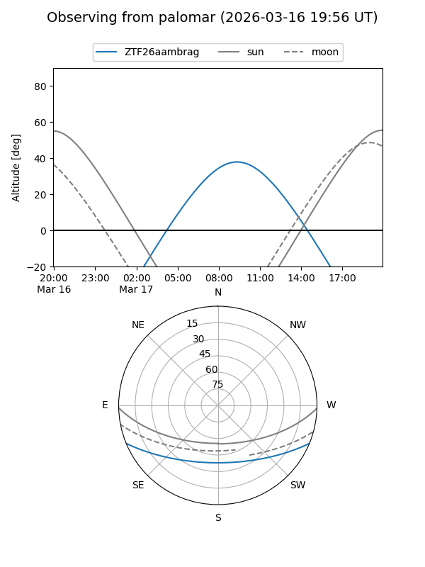

ZTF26aambrag
Target ZTF26aambrag at 2026-03-17 10:00
Aliases and brokers:
FINK: link
Lasair: link
ALeRCE: link
alt names
ZTF26aambrag (ztf,fink_ztf)
Coordinates:
equatorial (ra, dec) = 197.8065,-18.55186
equatorial (HMS+DMS) = 13:11:13.56,-18:33:06.70
galactic (l, b) = (309.4654,+44.06872)
Flags:
Photometry:
last ztfg=16.89, ztfr=17.96
1 ztfg, 1 ztfr detections
Lightcurve

Visibility


Additional plots